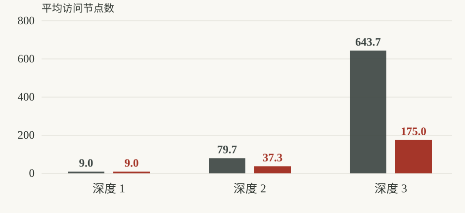
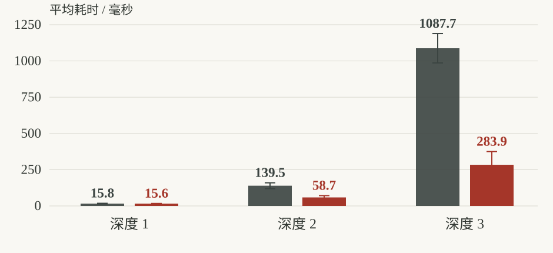

实验目的与内容
摘要
本实验用 Python 实现自由规则五子棋的极大极小搜索与 Alpha-Beta 剪枝，并以同一组局面、评价函数、候选落子及搜索深度比较两者。完整基准共记录 162 次搜索。所有成对搜索的最优根值与落子均通过一致性核对；按访问节点总数计算，Alpha-Beta 比极大极小减少 70.2% 的节点。性能结果同时记录棋盘大小和深度，以区分搜索树规模与单节点计算成本。
系统提供可交互的网页棋盘、算法和深度选择、搜索统计与过程展示，便于小组互相体验。搜索在局部候选集合上进行，因此实验结论描述这一选择性搜索树的性能，不代表求解了五子棋全部合法状态。强化学习、人类反馈学习和更进一步的深度调度已形成实施方案，尚无训练结果，不计入当前算法性能结论。
实验目的
我们希望通过可执行的对照实验理解零和博弈中的极大极小决策，验证 Alpha-Beta 在不改变同一搜索树最优值的前提下如何减少访问节点，并分析棋盘大小、候选分支数和搜索深度对运行成本的影响。网页用于把局面、搜索过程与测量结果联系起来，而实验 CSV 和自动化测试用于支撑报告结论。
实验内容与规则
黑棋先行、双方交替落子，棋子放在交叉点；横、竖或两条斜线中出现连续至少五子即获胜，棋盘填满且无人获胜时为和局。采用自由规则，不设禁手。程序验证棋盘尺寸、棋子取值、边界、重复落子和终局状态。搜索深度按半回合计数，一名棋手落一子算一层。
两种搜索的决策原理
极大极小搜索
五子棋可建模为确定性、双人、零和、完全信息博弈。树节点是一种棋盘状态，边表示合法落子。轮到己方时选择后继价值最大者，轮到对方时假设对方选择使己方价值最小的回应；依次回传，获得根节点的落子。搜索触及终局时使用确定的胜负值，触及深度上限时调用启发式评价函数。
实现采用 Negamax 形式统一双方代码：一个节点对当前执子方的价值，等于各子节点对下一执子方价值取反后的最大值。符号取反依赖零和假设；在切换执子方时必须同时切换价值视角。终局分值高于任何非终局启发式分值，并加入层数修正，使同为必胜时倾向更快获胜，同为必败时延缓失败。
Alpha Beta 剪枝
Alpha 记录当前路径上已知可达到的下界，Beta 记录上界。当某节点的搜索结果使 Alpha 不小于 Beta 时，剩余兄弟分支不可能影响祖先节点的选择，可以停止展开。该剪枝只排除不会改变当前决策的分支；对相同候选树和同一叶节点评价，完整搜索的根值与极大极小一致。
剪枝效率依赖遍历顺序。较好的落子先被访问，边界往往更早收紧。为避免把排序收益混入算法对照，本实验让两种算法共用候选生成与排序。界面中的被剪枝分支没有被实际求值，不能把它们显示为精确分数；被边界截断的候选只具有上界或下界。
复杂度与评价函数
若每层平均有 b 个候选、搜索 d 层，极大极小访问规模约随 b 的 d 次方增长。Alpha-Beta 的最坏情况仍可能达到同阶；在理想排序条件下，经典近似为 b 的 d/2 次方。实际运行还包括候选排序、棋型评估和迭代加深的成本，不能只凭理论指数推断毫秒耗时。
评价函数从当前执子方视角对四个方向的棋型计分，再减去对方棋型分。成五、活四、冲四、活三等威胁按紧迫程度给定不同权重。棋型分数是搜索用的相对尺度，不是经校准的胜率；绝对值很大也不等于统计意义上的胜率接近 100%。确定的成五由规则检查直接判断。
选择性搜索的边界
候选集合取已有棋子周围半径 2 的空位，按进攻、防守与确定性坐标规则排序。有一步必胜时只搜索必胜点；否则若对方有一步成五威胁，只搜索阻挡点，且保留全部阻挡点；其余情况按名义候选上限截取。此规则改变被考察的搜索树，与 Alpha-Beta 的边界剪枝不同。根值一致只保证在共同候选树内一致，不能证明全局最优。
极大极小
遍历共同候选树中的全部分支，逐层回传最优值。
Alpha-Beta
增加上下界，停止搜索已不可能改变祖先决策的分支。
共享同一候选树和评价函数，完整搜索的根值保持一致。候选裁剪会改变搜索范围，需单独说明。
系统实现与运行环境
运行环境
| 项目 | 本次记录 |
|---|---|
| 实现语言 | Python 3.12.7 Anaconda 发行版 |
| 基准运行平台 | Windows-11-10.0.26100-SP0 |
| 处理器 | Intel64 Family 6 Model 183 Stepping 1, GenuineIntel 共 24 个逻辑处理器 |
| 基准运行方式 | 单进程顺序执行，固定种子，搜索不设超时 |
| 展示环境 | 现代浏览器；Python HTTP 服务；hk_88 演示服务器 |
| 数据产物 | results/benchmark.csv 与 results/summary.json |
硬件信息和时延只对应本次基准运行环境。网页远程请求还受到网络往返、浏览器绘制和服务器负载影响，因此界面显示的体验时延不能直接替代算法基准数据。图形页面与 Python 搜索通过接口通信，规则判定和决策逻辑集中在后端。
模块组织
| 模块 | 职责 |
|---|---|
| engine.py | 棋盘验证、胜负判断、评价、候选生成、两种搜索 |
| server.py | 搜索与反馈接口、静态网页、实验结果与报告下载 |
| static | 棋盘交互、场景绘制、控制面板和搜索统计展示 |
| scripts/benchmark.py | 固定局面与算法对照，保存逐次数据和汇总 |
| tests | 规则、战术、算法一致性、超时恢复等自动化验证 |
| docs/innovation-plan.md | 学习、反馈和深度扩展的实验设计 |
交互搜索的完成语义
在线搜索按深度 1、2、3 逐轮加深，每轮完整结束后才更新可返回的落子。达到时间预算时，返回最后完成轮的结果；若第一层也未完成，则返回合法的确定性备选落子，并将完成深度标为 0。统计计入已尝试的全部轮次，返回的主变化线和树示意来自最后完整轮。搜索树画面受展示条数上限约束，显示节点数不等于算法访问的全部节点数。
递归通过 finally 撤销临时落子，超时也保持输入棋盘不变，以保证重复实验可比。在线使用时钟预算；基准关闭超时，核对完整目标深度的算法等价性。
可复现的对照实验
实施步骤
- 实现并检查棋盘合法性、四方向成五、边界落子和满盘和局。确认终局后搜索不再返回新落子。
- 建立共用候选生成和评价函数，实现无边界剪枝的 Negamax，再在相同递归结构中启用 Alpha-Beta。
- 运行一步必胜、必须防守、深层战术与输入不变性测试；对多个固定局面核对两算法根值及落子。
- 固定棋盘大小、搜索深度、候选上限和局面种子，禁用时间截断，顺序运行基准并保存 CSV。
- 按棋盘大小与深度汇总节点、耗时及一致性，检查所有记录均完成目标深度，再绘图分析。
- 启动网页，展示落子与胜负判断、算法切换、深度变化、搜索过程及报告下载，供小组互评。
实验因素与公平性
| 因素 | 本次设置 |
|---|---|
| 棋盘大小 | 9×9、13×13、15×15 |
| 目标深度 | 1、2、3 层 |
| 局面随机种子 | 20261013；每尺寸 3 个合法八手局面 |
| 每局面测量次数 | 3 |
| 名义候选上限 | 8；一步必胜和防守点可突破上限 |
| 停止条件 | 只按目标深度或终局停止；基准关闭墙钟超时 |
每一对搜索使用同一份棋盘内容和当前执子方，评价函数、候选策略及遍历顺序完全一致。三种棋盘复用相同居中开局的相对坐标，以控制局面差异。测量前预热几何缓存，每次重复交替两算法运行顺序。时延受系统负载影响，因此同时报告更接近结构性成本的节点数；较少节点不保证每条短时任务都更快。
指标解释
节点减少率定义为 1 减去 Alpha-Beta 节点数与极大极小节点数之比。总节点减少率按全部配对节点之和计算，避免把很小和很大的搜索赋予相同权重。耗时单位为毫秒。迭代加深的节点数包含从第 1 层到目标深度的各轮访问，因此不能把它误认为只执行了最后一层的节点数。
搜索深度与剪枝收益
下表按棋盘大小和深度汇总，共 9 组条件、162 条逐次搜索记录。每个算法每组覆盖 3 个局面、每局面重复 3 次；节点与耗时均取这 9 次测量的算术平均值。原始数据保存在 results/benchmark.csv，配置与一致性核对保存在 results/summary.json。
横向滑动查看完整图表
完整搜索所访问的节点
15 × 15
在 15 × 15 棋盘、深度 3 下，Alpha-Beta 平均访问 175.0 个节点，极大极小为 643.7 个，减少 72.8%。
运行耗时与测量波动
15 × 15
同一条件下，平均耗时从 1087.67 ms 降至 283.93 ms，约加速 3.83 倍。浅层搜索中的毫秒差异仍可能受运行时波动影响。
数据源：逐次测量 CSV · 完整配置与汇总 JSON。候选上限 8，固定种子 20261013，基准不设超时。
查看全部棋盘与深度的实测均值
| 棋盘 | 深度 | MM节点 | AB节点 | 减少率 | MM毫秒 | AB毫秒 |
|---|---|---|---|---|---|---|
| 9×9 | 1 | 9.0 | 9.0 | 0.0% | 6.18 | 6.18 |
| 9×9 | 2 | 79.7 | 31.7 | 60.3% | 51.05 | 20.65 |
| 9×9 | 3 | 643.7 | 171.7 | 73.3% | 424.57 | 126.20 |
| 13×13 | 1 | 9.0 | 9.0 | 0.0% | 13.24 | 12.40 |
| 13×13 | 2 | 79.7 | 37.3 | 53.1% | 110.51 | 51.11 |
| 13×13 | 3 | 643.7 | 175.0 | 72.8% | 896.85 | 238.48 |
| 15×15 | 1 | 9.0 | 9.0 | 0.0% | 15.84 | 15.65 |
| 15×15 | 2 | 79.7 | 37.3 | 53.1% | 139.45 | 58.73 |
| 15×15 | 3 | 643.7 | 175.0 | 72.8% | 1087.67 | 283.93 |
表 1 相同候选树上的算法对照 MM 为极大极小 AB 为 Alpha-Beta
根值与落子核对通过 81/81 次配对测量，即 27 个不同局面与深度组合各重复 3 次。最明显的节点减少出现在 9×9、深度 3，减少率为 73.3%。全部记录按节点总和合并后减少 70.2%。这些结论只覆盖本次局面集与候选上限。
结果分析与正确性验证
剪枝收益来自哪里
深度为 1 时，搜索只需为根节点候选求叶值，没有足够的内部结构形成大范围剪枝，节点减少通常很小。随着深度增加，较早得到的好分支能为更多后续分支建立边界，Alpha-Beta 的节点优势更容易出现。实际收益由局面威胁和候选顺序共同决定，不能把某一组的减少率推广到任意开局。
结果中根值一致说明剪枝没有改变共同候选树上的决策值。落子一致还依赖确定性排序和同分时保留先遇到的最优点。Alpha-Beta 在非最优根候选上可能只得到界限，因此候选列表中各项分数不一定逐项等于完整极大极小的精确值；这不会影响最终根值核对。
棋盘大小与深度的不同影响
在候选上限相同的条件下，棋盘变大不必然让每层候选数同步增加。因此，不能仅根据棋盘面积推断节点数成比例增加。较大的棋盘仍会增加局面扫描、棋型统计和候选检查成本；同一深度的耗时变化可能来自单节点成本，也可能来自局面本身的可剪枝程度。深度则直接增加未来回应层数，对搜索树的规模更敏感。
本实验主要比较完成搜索的计算量，没有通过大量完整对局估计棋力。更深搜索可能看到浅层无法发现的威胁，但也会增加延迟；选择性候选遗漏或评价函数偏差仍可能导致错误。要声称更深必然更强，需要在固定开局、交换先后手和相同预算下进行独立对局，而不能只依据节点数和运行时间。
正确性检查
引擎的 9 项自动化测试全部通过，覆盖横竖斜线与长连获胜、非法棋盘、终局无动作、搜索输入不变性、一步必胜与防守点保留、算法根值和落子一致、满盘和局以及时间预算后的棋盘恢复。服务端另有 5 项接口测试通过。测试用于发现实现错误；有限样例不能替代所有棋局的形式证明。
实验局限
局面样本量有限，且采用局部候选与分支上限。固定种子提供可复现性，但不自动保证对真实人类对局分布有代表性。短时间测量会受缓存、系统调度与 CPU 竞争影响；因此小于测量波动的毫秒差异不宜作强结论。启发式分数没有概率校准，反馈样本与强化学习模型也尚未形成独立测试集。
从搜索走向学习
创新部分以可验证的研究问题组织。当前已完成深度控制、迭代加深、搜索过程展示和反馈保存接口。反馈保存落子前棋盘、AI 候选、正负评价与可选替代落子，不触发训练。强化学习、人类偏好模型及按局面自适应分配计算预算仍处于方案阶段。完整设计见 docs/innovation-plan.md。
自我对弈价值学习
先在 9×9 棋盘进行自我对弈，用胜、负、和的终局回报训练小型卷积价值网络。输入包含己方、对方与合法位置通道，输出当前执子方视角的局面价值。将价值网络接入 Alpha-Beta 的截断叶节点，规则终局判断保持优先。第一轮每个种子上限 2,000 局或 2 CPU 小时，先验证吞吐与学习信号，再扩充规模。可进一步增加策略头用于候选排序。
人类反馈校准
将同一局面的两个候选落子匿名、随机顺序展示，由成员选择 A、B、相当或无法判断，并记录原因。收集原始局面、候选、模型版本和搜索预算。以 200 至 500 条有效偏好起步，先学习棋型权重或轻量偏好模型，再以小权重影响同类候选排序；必胜和必须防守的规则优先。只保存点赞或反馈并不等于模型已经从人类反馈学习。
自适应深度
在迭代加深基础上，遇到候选分差较小、双威胁或主变化线不稳定的局面继续搜索，局面明确时提前停止。给定节点预算与墙钟上限，并显示实际完成深度。与固定深度对照时匹配平均节点预算，报告胜平负、每步中位耗时及 p95 耗时，避免用额外算力冒充方法改进。
防止数据泄漏与无效结论
计划固定独立种子 7、23、61，按完整对局和开局族划分训练 70%、验证 15%、测试 15%。旋转镜像后的局面哈希用于跨集去重；同局对弈的相邻状态不能分散到不同集合。仅用验证集选择检查点、混合权重和深度阈值，测试集冻结。每个种子使用 50 个固定开局并互换先后手，比较基础搜索、仅价值学习、仅反馈、仅自适应深度和完整组合。
主要失败风险包括自我对弈过拟合、人类意见不一致、偏好奖励损害客观胜率，以及模型推理开销超过剪枝收益。应保留历史对手池、重复标注样本、独立战术测试和无学习回退版本，并公开失败案例。创新评分取决于最终实现和验证质量，不以方案本身预先保证分数。
实验结论与总结
实验结论
我们完成了五子棋的极大极小和 Alpha-Beta 两种搜索实现，并通过 81 次配对测量验证共同候选树上根值和落子的等价性。本次真实基准中，Alpha-Beta 按总访问节点计减少 70.2%。剪枝收益随深度与局面变化，棋盘变大还会增加评估和扫描成本，因此需要结合节点数与耗时解释性能。
适合课堂展示的默认设置应在响应时间和实际完成深度之间取平衡。系统提供在线交互与离线基准两条路径：前者采用有时间预算的迭代加深，后者关闭超时完成目标深度。报告把选择性候选裁剪、Alpha-Beta 剪枝和界面展示上限分别说明，避免把三种不同的限制混为一谈。
总结与心得体会
我们在这一实现中把公平比较放在统一数据和统一搜索规则上。两种算法共用评价函数与候选顺序后，节点数的差异才可以归因于边界剪枝。固定随机种子、同分排序和输入恢复保证同一局面的结果能够复核；保存原始 CSV 则让报告数字可以重新计算。
从实验现象可以看到，理论复杂度解释增长趋势，实际运行成本还取决于每个节点所做的工作。漂亮的过程展示需要配合准确的分数语义、完成深度和统计口径。后续若引入学习方法，我们会保留当前搜索基线，并分别证明棋力、偏好一致性和计算效率的变化。成员具体分工与个人体会可在小组实际体验后补充。
课堂验收建议
- 进入网页，展示人机落子、胜负检测、重新开始和棋盘尺寸切换。
- 在同一局面分别运行两种算法，解释根值一致、节点数差异与剪枝标记。
- 调整深度，展示请求深度与完成深度，并打开真实基准数据和报告。
- 展示人类反馈入口，说明已收集的数据与尚未训练的模块，介绍后续对照设计。
参考资料
课程材料 实验一 五子棋 实验任务与成果呈现要求 第 2 至 3 页
Silver 等 Mastering Chess and Shogi by Self-Play with a General Reinforcement Learning Algorithm 2017 论文原文 ↗
Christiano 等 Deep Reinforcement Learning from Human Preferences 2017 论文原文 ↗